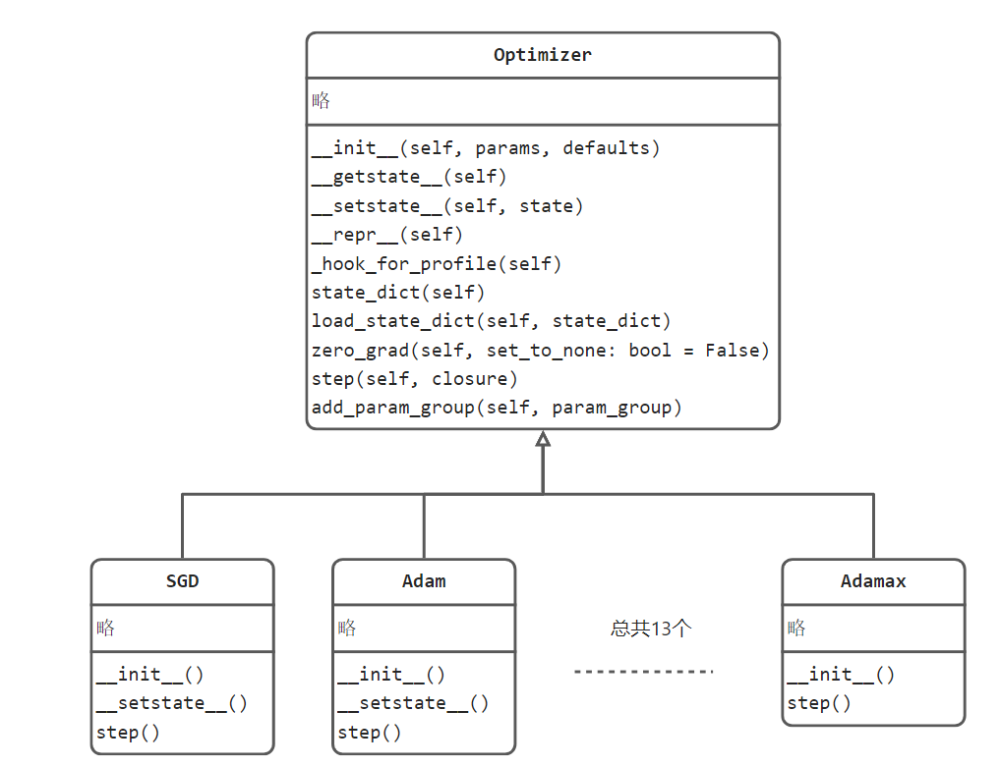
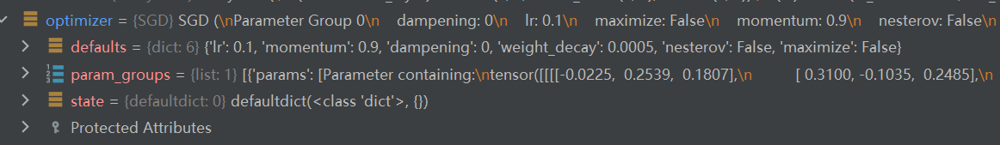
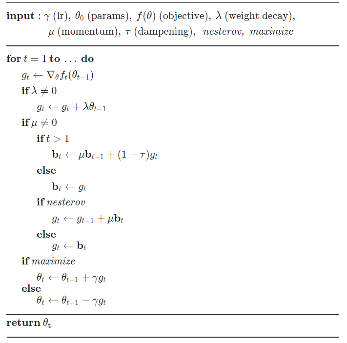
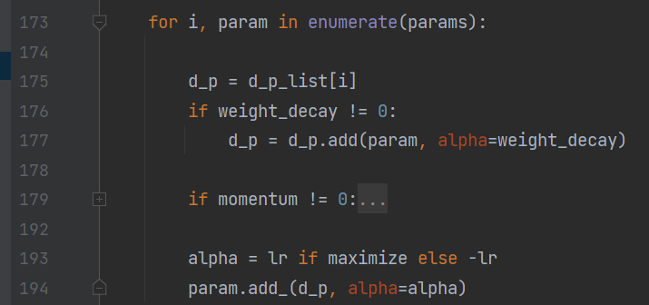

5.2 十三个优化器
Optimizer 简介
有了数据、模型和损失函数，就要选择一个合适的优化器(Optimizer)来优化该模型，使loss不断降低，直到模型收敛。本节将介绍pytorch中优化器——Optimizer。 优化器的实现在torch.optim中，torch.optim is a package implementing various optimization algorithms. 在其中有一个核心类是Optimizer，Optimizer在pytorch提供的功能是所有具体优化器的基类，它对优化器进行了抽象与定义，约定了一个优化器应有的功能，Optimizer与十三个优化器的关系如下图所示： 
通过上图可知道Optimizer定义了优化器应当具备的基础功能，如获取状态数据，加载状态数据，梯度清零，执行一步优化和添加参数组。
不同的优化方法会继承Optimizer，同时只需要实现不同的step()即可。这一点与损失函数类似，不同的损失函数只需要在forward()函数中定义好不同的公式计算即可。
本小节将以SGD为例，深入讲解优化器的以下函数，并具体地观察SGD算法的实现过程。
state_dict(self)
load_state_dict(self, state_dict)
zero_grad(self, set_to_none: bool = False)
step(self, closure)
add_param_group(self, param_group)
优化器工作方式
优化器如何工作，使得模型精度逐渐提高的？在此就不详细讲解，请大家自行补充机器学习基础概念。
众所周知，优化器是根据权重的梯度作为指导，定义权重更新的力度，对权重进行更新。
过程很简单，实现起来却是复杂的，上述过程涉及几个问题：
- 梯度哪里来？
更新哪些权重？
怎么执行权重更新？
依次回答上述问题，便可熟悉优化器工作方式。
梯度哪里来？ 梯度通过loss的反向传播，得到每个权重的梯度值，其中利用pytorch的autograd机制自动求导获得各权重的梯度。 （如果对autograd机制不熟悉，请查看第二章第六节）
更新哪些权重？通过loss的反向传播，模型(nn.Module)的权重（Parameter）上有了梯度(.grad)值，但是优化器对哪些权重进行操作呢？实际上优化器会对需要操作的权重进行管理，只有被管理的权重，优化器才会对其进行操作。在Optimizer基类中就定义了add_param_group()函数来实现参数的管理。通常在实例化的时候，第一个参数就是需要被管理的参数。
怎么执行权重更新？通过上述UML类图不难发现，step()函数是进行优化操作的，step()函数中实现了对所管理的参数进行更新的步骤。
总结一下：优化器在实例化时告诉它，需要对哪些参数进行管理，然后再每个iteration迭代时，借助loss.backward()得到梯度，接着优化器干活 optimizer.step()完成一步参数更新。
（此过程可以回顾第二章第二节的模型训练代码）
优化器基类 Optimizer
Optimizer类是所有具体优化器的基类（Base class for all optimizers.）
下面分别介绍Optimizer的基础属性及方法。
属性：
- 参数组(param_groups)：
在finetune、某层定制学习率，某层学习率置零操作中，都会设计参数组的概念，因此首先了解参数组的概念非常有必要。
参数组是用于管理需要进行优化的那些参数，例如权值weight，偏置bias，BN的alpha/beta等。
注意，这里是参数组不是参数，表明可以将所有参数进行分组，区别对待。
例如在finetune过程中，通常让前面层的网络采用较小的学习率，后面几层全连接层采用较大的学习率，
这是我们就要把网络的参数划分为两组，每一组有它对应的学习率。正是因为这种针对不同参数需要不同的更新策略的需求，才有了参数组的概念。
参数组是一个list，其元素是一个dict，dict中包含，所管理的参数，对应的超参，例如学习率，momentum，weight_decay等等。
- state：
用于存储优化策略中需要保存的一些缓存值，例如在用momentum时，需要保存之前的梯度，这些数据保存在state中。
- defaults:
优化方法默认的超参数；

方法：
- zero_grad()
功能：清零所管理参数的梯度。由于pytorch不会自动清零梯度，因此需要再optimizer中手动清零，然后再执行反向传播，得出当前iteration的loss对权值的梯度。
- step()
功能：执行一步更新，依据当前的梯度进行更新参数
- add_param_group(param_group)
功能：给optimizer管理的参数组中增加一组参数，可为该组参数定制lr,momentum,weight_decay等，在finetune中常用。
例如：optimizer_1.add_param_group({'params': w3, 'lr': 0.001, 'momentum': 0.8})
- state_dict()
功能：获取当前state属性。
通常在保存模型时同时保存优化器状态，用于断点保存，下次继续从当前状态训练；
- load_state_dict(state_dict)
功能：加载所保存的state属性，恢复训练状态。
对优化器工作方式熟悉后，再看Optimizer的属性和方法就简单了，下面通过一个具体的优化算法来熟悉完整的优化器使用。
SGD概念
torch.optim.SGD详情请参照[官方文档](
https://pytorch.org/docs/stable/generated/torch.optim.SGD.html#torch.optim.SGD)
SGD(stochastic gradient descent，随机梯度下降)是深度学习模型优化过程中最基础、最受欢迎、最稳定的一个，即使优化算法层出不穷，仅pytorch就提供了十三个，但目前绝大多数论文中仍旧采用SGD进行训练，因此SGD必须掌握。
SGD核心理论知识是梯度下降( gradient descent)，即沿着梯度的负方向，是变化最快的方向。
而随机则指的是一次更新中，采用了一部分样本进行计算，即一个batch的数据可以看作是整个训练样本的随机采样。更多关于SGD的理论知识请自行学习机器学习基础。
SGD更新公式可简化为 w新 = w旧 - w_grad，即参数减去梯度（学习率为1）
不过通常会加入学习率来调整更新的步伐：w_新 = w_旧 - (lr * w_grad)
对于加入L2正则（weight decay）时，变为：w_新 = w_旧 - (lr (w_grad + weight_decay w_旧))
L2正则称之为weight decay的原因，对比公式1发现W需要乘以一个小于1的系数，因此是衰减的：w_新 = w_旧 - (lr (w_grad + weight_decay w_旧)) = w_旧（1 - lrweight_decay) - (lr w_grad)
对于其它momentum 、dampening 和nesterov 的加入就不详细展开，可通过官方文档查阅：

SGD使用
请结合代码观察SGD的使用
第一步：实例化：optimizer = optim.SGD(model.parameters(), lr=0.1, momentum=0.9, weight_decay=5e-4)
第二步：loss.backward()之前进行梯度清零：optimizer.zero_grad()
第三步：loss.backward()之后执行一步更新：optimizer.step()
在代码中还有一处用到了optimizer，那就是学习率调整模块：
scheduler = optim.lr_scheduler.StepLR(optimizer, gamma=0.1, step_size=50)
原理是将optimizer放到lr_scheduler进行管理，lr_scheduler会修改optimizer中的学习率
SGD代码实现
SGD类继承于Optimizer类，并重写step函数实现核心功能。
SGD类中step函数首先对各参数组、参数进行超参数的获取确定：for group in self.param_groups:
然后借助functional.sgd函数实现公式计算：
F.sgd(params_with_grad,
d_p_list,
momentum_buffer_list,
weight_decay=weight_decay,
momentum=momentum,
lr=lr,
dampening=dampening,
nesterov=nesterov,
maximize=maximize,)
下面重点进入/torch/optim/_functional.py 的sgd()观察：这里为了讲解过程，省略了momentum的代码：

d_p：是梯度
weight_decay：是权重衰减系数，如 0.0001
param：是具体的权重参数
lr:是学习率
依194行代码: param = param + (alpha)* d_p
依193行代码: param = param + (-lr) d_p = **param - lr \ d_p**
依177行代码: param = param - lr (d_p + weight_decay param) = param(1 - lr * weight_decay) - lr*d_p
到这里，就可以与上述理论部分对应上了。
小结
其余十二个优化器可通过官方文档查阅，相信大家熟悉SGD以及优化器使用逻辑，其它的优化器都可轻松掌握。
| Adadelta | Implements Adadelta algorithm. |
|---|---|
| Adagrad | Implements Adagrad algorithm. |
| Adam | Implements Adam algorithm. |
| AdamW | Implements AdamW algorithm. |
| SparseAdam | Implements lazy version of Adam algorithm suitable for sparse tensors. |
| Adamax | Implements Adamax algorithm (a variant of Adam based on infinity norm). |
| ASGD | Implements Averaged Stochastic Gradient Descent. |
| LBFGS | Implements L-BFGS algorithm, heavily inspired by minFunc. |
| NAdam | Implements NAdam algorithm. |
| RAdam | Implements RAdam algorithm. |
| RMSprop | Implements RMSprop algorithm. |
| Rprop | Implements the resilient backpropagation algorithm. |
| SGD | Implements stochastic gradient descent (optionally with momentum). |
下面梳理pytorch整个优化器实现的逻辑关系：